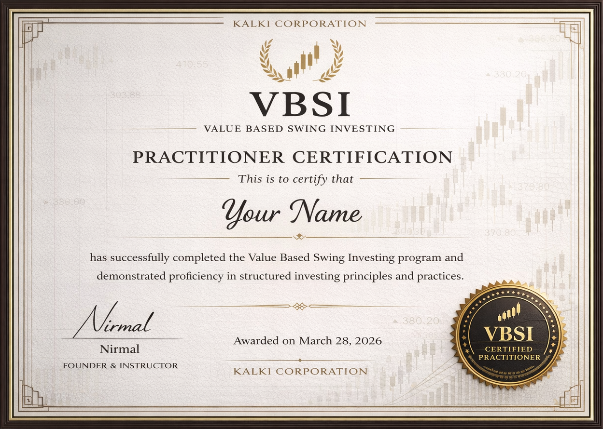

Value Based Swing Investing (VBSI)
VBSI is a structured wealth-building program teaching Fundamental Analysis, Technical Strategy & Capital Protection, designed for serious learners who want clarity, not chaos.
-
23K Student enrolled
-
From 800+ feedbacks
4.0
Why Most People Fail in the Markets?
-
Many people enter the stock market believing that buying good companies and holding them is enough. But real investing requires understanding business quality, financial strength, valuation, and long-term potential. Without this clarity, decisions are often based on tips, headlines, or price movement. The result is predictable: good companies bought at wrong prices, average companies bought at high valuations, and weak companies bought with hope. Without conviction built on knowledge, holding becomes stressful and exiting becomes emotional.
-
Stocks often generate strong returns during momentum phases and then enter long periods of consolidation. Without a monitoring framework, investors struggle to decide whether to hold or exit. Some watch profits disappear because they don't know when to reduce exposure. Others exit too early and miss the next major move. The real problem is not volatility, it is the absence of a structured decision system.
-
Most people focus only on stock selection but ignore position sizing. They allocate large capital to low-conviction ideas and hesitate to meaningfully invest in strong opportunities. Often, losing positions become oversized while winning positions remain underweighted. Over time, this imbalance silently damages portfolio growth. Without disciplined capital management, even good analysis fails to create consistent results.
-
Working professionals and students rarely have the time to deeply analyze businesses or track markets daily. Without a structured system, they depend on news, influencers, or recommendations. Dependency replaces independent thinking, and inconsistency replaces strategy. Limited time without a framework turns the market into a source of confusion rather than wealth creation.
-
Trading demands focus, precision, discipline, and strict risk management. But many attempt it casually, entering between work hours, adjusting positions emotionally, and reacting to short-term movements. Without predefined rules and emotional control, trading slowly turns into impulse-based decision-making, where capital is exposed without proper protection.
-
One of the most common mistakes is mixing both mindsets. Many believe they are long-term investors, yet monitor prices daily and react to short-term volatility. Sometimes this works temporarily, creating false confidence. But when the market changes, confusion begins. Without clarity of strategy, decisions become reactive rather than intentional.
The Core Issue.
Most people do not lack intelligence. They lack a structured system that guides knowledge, monitoring, and capital allocation. Without that structure, emotions dictate decisions and decisions dictate outcomes.
Introducing VBSI - A Structured Framework for Market Mastery
VBSI was built to solve the exact problems most participants face: confusion in investing, inconsistency in trading, emotional decision-making, and poor capital allocation. It combines value analysis with structured swing execution within a disciplined framework.
What is VBSI?
Value builds conviction Swing provides timing Structure protects capital
VBSI is NOT.
IT IS
Intelligent participation in the market.
-
V - Value
Business quality firstMost people buy price movement.
VBSI teaches you to evaluate business quality, financial strength, and valuation before making a decision.
You invest with conviction because you understand what you own and why you own it. -
B - Based
Conviction over speculationEvery decision is backed by analysis — not excitement.
You learn to build conviction using structured reasoning instead of speculation. -
S - Swing
Timing with structureMarkets move in cycles of momentum and consolidation.
VBSI teaches you to enter fundamentally strong businesses during favorable swing phases, improving timing and risk control. -
I - Investing
Allocation with disciplineLong-term wealth depends on capital allocation and discipline.
VBSI teaches you how to size positions, protect capital, and manage portfolios with structured decision-making.
What Makes VBSI Different?
You are not forced to choose between investor or trader. You become a structured market participant.
When value guides your selection and structure guides your execution, the market stops feeling random — and starts feeling logical.
Built for Serious Market Participants — Not Casual Speculators
VBSI is not designed for people looking for shortcuts. It is designed for individuals who want structured control over their financial decisions.
-
01
Working Professionals Who Want to Invest Intelligently
You have a job. You earn consistently. But your capital deserves more than fixed deposits and random stock purchases. You don't have time to track markets all day, yet you want your money to compound with clarity.
-
02
Traders Who Want to Convert Income into Long-Term Wealth
You may already generate trading income. But income alone does not create lasting wealth. Without structured investing, trading profits often cycle back into the market.
-
03
Full-Time Investors Seeking Structure and Precision
If you actively manage your portfolio but feel inconsistencies in entry, exit, or allocation decisions, VBSI provides a clear operating framework.
-
04
College Students Serious About Starting Early
If you are new to the markets but genuinely committed to learning properly from the beginning, VBSI gives you foundational clarity.
-
05
Individuals Who Want Full Control Over Their Money
Ultimately, VBSI is for those who do not want to depend on tips, influencers, fund managers, or market noise.
Who VBSI Is NOT For
-
People looking for guaranteed returns
-
Those seeking overnight success
-
Individuals unwilling to follow structured discipline
-
Passive learners who do not apply frameworks
If you want clarity over chaos, structure over speculation, and ownership over dependency VBSI was built for you.
7 Modules. One Complete System.
Each module builds on the last from understanding businesses to mastering your own psychology.
-
You don't start with charts. You start with understanding. In this module, you learn how businesses actually create value who they serve, why customers pay, and what makes them survive and grow for decades. Instead of chasing price movements, you build the ability to judge whether a business is even worth your time. This is where VBSI separates you from the crowd you stop thinking like a trader and start thinking like an owner.
WHAT YOU WILL LEARN
- Break down any business using a simple 5-question framework
- Understand how different business types actually make money
- Identify strong value propositions and pricing power
- Judge management quality beyond surface-level narratives
- Spot scalable businesses vs temporary growth stories
- Filter out weak businesses before touching numbers
✦ You stop chasing stocks because they're moving. You start choosing businesses because they deserve your capital.
-
A good story can hide a weak business but numbers cannot. In this module, you learn how to read financial statements like an investor, not an accountant. You focus only on what matters: financial strength, earnings quality, and cash flow reality. By the end, you'll be able to confidently reject weak businesses, even if they look attractive on the surface.
WHAT YOU WILL LEARN
- Read Balance Sheet, P&L, and Cash Flow in a simple way
- Identify financially strong vs fragile businesses
- Detect fake or low-quality profits
- Understand why cash flow matters more than profit
- Recognize how debt can silently destroy a business
- Build a high-quality watchlist with confidence
✦ You stop trusting profit numbers blindly. You start trusting businesses that generate real cash.
-
Finding a great company is only half the job. The price you pay decides your return. In this module, you learn how to define valuation zones instead of guessing exact prices. No complex formulas, no unrealistic predictions just practical tools that help you act with patience and discipline. You stop reacting to price and start waiting for opportunity.
WHAT YOU WILL LEARN
- Understand price vs intrinsic value
- Use historical valuation ranges effectively
- Identify undervalued vs overhyped stocks
- Why low PE doesn't always mean cheap
- How growth and ROCE impact valuation
- Define clear buy, wait, and avoid zones
✦ You stop asking “how high can it go?” You start asking “how much can I lose?”
-
Even the best business bought at the wrong time creates stress. In this module, you learn to use charts as a timing tool not for prediction, not for trading, but for reducing regret. You focus only on what matters: market structure, demand zones, and price behavior. No indicators. No noise. Just clarity.
WHAT YOU WILL LEARN
- Read charts with VBSI chart language
- Understand trend, swing, and noise
- Identify swing bottom zones
- Understand support as zones, not lines
- Use volume as confirmation
- Avoid FOMO and breakout chasing
✦ You stop chasing rising prices. You start entering when fear creates opportunity.
-
Most investors lose not because of bad stocks but because of bad allocation. In this module, you learn how to manage capital across equity, cash, and debt. You understand when to invest, when to wait, and how to stay prepared for opportunity. This is where discipline replaces urgency.
WHAT YOU WILL LEARN
- Why cash is a strategic asset
- Allocate between equity, debt, and cash
- Avoid being fully invested at wrong times
- Manage portfolio-level risk
- Prepare for crashes and corrections
- Think like a capital allocator
✦ You stop feeling the need to always be invested. You invest only when it makes sense.
-
Most investors lose money after buying the right stock. In this module, you learn how to handle drawdowns, ignore noise, and stay rational when markets test your patience. You combine logic with behavior so decisions are driven by process, not emotions. This is where real investors are built.
WHAT YOU WILL LEARN
- Monitor positions without overreacting
- Differentiate price fall vs business damage
- Handle drawdowns without panic
- Avoid common psychological traps (FOMO, fear, bias)
- Know when to exit, when to hold and when to do nothing
- Build a personal discipline system
✦ You stop reacting to the market. You start responding with a process.
-
This is where everything comes together. In this module, you apply VBSI end-to-end on real companies from business analysis to execution decisions. No theory, no shortcuts just real thinking and real decision-making. You leave with confidence, not dependence.
WHAT YOU WILL LEARN
- Analyze any company from scratch
- Decide BUY, WAIT, or REJECT logically
- Connect business, valuation, and timing
- Create a complete investment plan
- Avoid forcing trades
- Build your own investing system
✦ You stop looking for tips. You start making your own decisions with clarity.
Course Format & Duration
Structured. Focused. Execution-Oriented.
COURSE DURATION
-
24 Hrs Online live lectures
-
13 Hrs Recorded video lectures
-
24 Resources To Download
-
22 Question papers To practice
-
Lifetime access To content
Each module builds logically on the previous one — no random jumping between topics.
PRACTICAL ASSIGNMENTS
-
24 Hrs Online live lectures
-
13 Hrs Recorded video lectures
-
24 Resources To Download
-
22 Question papers To practice
-
Lifetime access To content
This ensures implementation — not passive learning.
RESOURCES PROVIDED
-
24 Hrs Online live lectures
-
13 Hrs Recorded video lectures
-
24 Resources To Download
-
22 Question papers To practice
-
Lifetime access To content
You graduate with tools — not just theory.
🥋 Meet Your Sensei
My name is Nirmal Singh, and I built VBSI because I saw a problem that most people in the market face. When I first started studying the stock market, I believed that if I learned enough about businesses, financial statements, and charts, success would naturally follow. But over time I realized that knowledge alone was not enough. I made the same mistakes many investors make mixing conviction with emotion, holding when I should have exited, exiting when I should have held, and allocating capital without a clear system. That experience taught me an important lesson: a good stock is not enough, a structured framework is essential. VBSI was created from that realization. Today, my goal is simple to help serious learners understand businesses deeply, respect financial strength, demand valuation discipline, and manage capital with clarity and structure so they can confidently make their own decisions in the market instead of depending on tips or noise.
— Nirmal Singh
✦ A Personal Note
If you are looking for shortcuts, this program is not for you. If you are serious about building long-term wealth with structure, and you are willing to follow discipline consistently VBSI will change the way you see the market.
Certification & Outcomes
Proof of Discipline. Clarity of Skill.
VBSI Certified Practitioner
Value Based Swing Investing PractitionerUpon successful completion of the course, participants who will complete the followings will receive a certificate of completion that validates your understanding of the VBSI framework and your ability to apply it in real-world investing scenarios.

It Does not mean
-
Guaranteed returns
-
Market predictions
-
Advisory license
It means
-
You understand structured investing
-
You can evaluate businesses independently
-
You can define margin of safety
-
You can allocate capital rationally
-
You operate with discipline
What you Will Learn
Measurable Outcomes
-
Reject weak businesses confidently
-
Build a high-quality watchlist
-
Define valuation comfort zones
-
Identify swing accumulation areas
-
Deploy capital without fear
-
Handle drawdowns logically
-
Create and follow your personal investing SOP
You stop reacting to markets. You start operating with a framework.
The Real Outcome
- From confusion clarity
- From reaction structure
- From dependence independence
You become capable of managing your own capital with conviction.
Long-Term Impact
- How to think like an owner
- How to wait patiently
- How to protect capital
- How to avoid emotional mistakes
That is where compounding begins.
VBSI does not promise excitement. It builds discipline — and discipline builds wealth.
How much you pay for VBSI
Includes
- All 8 Core Modules
- 16 Live Sessions (8 Weeks)
- Real NSE Case Studies
- Practical Worksheets
- Capital Allocation Templates
- Position Monitoring Framework
- Personal Investing SOP
- Final Case Study Evaluation
- VBSI Practitioner Certification
💎 Program Investment
This is not a fee for content. It is an investment in structured financial thinking.When you compare this to:
- Years of trial-and-error losses
- Random stock tips
- Emotional drawdowns
- Misallocated capital
Special Consideration for College Students
Students currently enrolled in college can verify their status for a structured concession.
College Student Investment: ₹ 14,999
Because starting early with the right framework can change an entire financial life. However:- Seats under student pricing are limited per batch
- Commitment level remains the same
- Discipline expectations remain identical
Batch Structure
To maintain interaction and seriousness:
- Seats are limited per batch
- Participation is expected
- Assignments are mandatory for certification
How to Enroll
Option 1: Direct Enrollment
If you are confident and ready to commit:
Option 2: Consultation Before Enrollment
If you would like clarity before committing:
During this session:
- I understand your current market experience
- I explain how VBSI fits your goals
- I answer your doubts directly
- I assess whether this program is right for you
Refund & Commitment Policy
VBSI is a structured, capacity-limited live training program. Seats are reserved in advance. Time and batch structure are committed based on confirmed enrollments.
For this reason: All enrollments are final. There is a strict no-refund policy once payment is made.What Students Are Saying
Real Feedback from VBSI Participants
-
Rohit Sharma
4.0
"For the first time, the market feels logical."
Before VBSI, I used to buy based on news and sell based on fear. I thought I understood investing, but I had no structure. The biggest shift for me was learning how to separate business quality from price noise. Now I don't panic during corrections. I know what to check and what to ignore.
-
Rohit Sharma
4.0
"For the first time, the market feels logical."
Before VBSI, I used to buy based on news and sell based on fear. I thought I understood investing, but I had no structure. The biggest shift for me was learning how to separate business quality from price noise. Now I don't panic during corrections. I know what to check and what to ignore.
-
Rohit Sharma
4.0
"For the first time, the market feels logical."
Before VBSI, I used to buy based on news and sell based on fear. I thought I understood investing, but I had no structure. The biggest shift for me was learning how to separate business quality from price noise. Now I don't panic during corrections. I know what to check and what to ignore.
Frequently Asked Questions
Clear Answers Before You Decide
-
Yes — if you are serious. You do not need prior market expertise. But you must be willing to think deeply and follow structure. VBSI starts from business fundamentals and builds layer by layer. Even beginners can follow — provided they are disciplined.
-
No. VBSI is a structured investing framework. Technical analysis is used only for timing within fundamentally strong businesses. It is not an intraday or speculative trading program.
-
No. VBSI does not provide tips, signals, or recommendations. You will learn how to independently analyze and decide whether to Buy, Wait, or Reject a stock using a structured framework. The goal is independence not dependence.
-
All core sessions are conducted live and interactive. The focus is on structured discussion, real examples, and clarity. Recordings may be provided for revision (if applicable), but live participation is strongly encouraged.
-
- 2 live sessions per week (90 minutes each) - 1–2 hours for assignments and revision Total commitment: ~4 hours per week. This is manageable even for working professionals.
-
No. VBSI has a strict no-refund policy once payment is made. Seats are limited and batch structure is planned in advance. If you need clarity before enrolling, you are encouraged to book the ₹499 consultation call. Clarity before commitment. Commitment after enrollment.
-
You can book a 1:1 consultation call for ₹499. During this session: - We assess your current level - We discuss your goals - I clarify how VBSI works - We determine if this program fits you If you enroll, ₹499 is adjusted in your final payment.
-
No. The ₹25,000 fee is strictly for verified college students currently enrolled in an institution. Verification is required. Standards remain the same.
-
You will leave with: - A complete investing framework - Personal SOP - Worksheets and templates - Structured decision-making clarity The goal is long-term independence, not course dependency.
-
Batch size is intentionally limited to maintain interaction quality and serious participation. This ensures: - Better Q&A - Individual clarity - Structured learning environment
Contact Us
Email Support
- Enrollment
- Student verification
- Batch dates
- Payment issues
Whatsapp Support
You can write to: +91-8958825567Important Note
VBSI does not provide stock recommendations or advisory services over email, WhatsApp, or social media. All structured learning happens inside the program.
Disclaimer & Risk Disclosure
Please Read Carefully
The stock market involves risk.
VBSI is an educational training program designed to teach structured investing and decision-making frameworks.It does not:
- Provide investment advice
- Offer stock recommendations
- Guarantee returns
- Manage funds on behalf of participants
All examples used during training are for educational purposes only. Any financial decision taken after the program is solely your responsibility. Markets are influenced by economic, political, and business factors beyond anyone's control. Capital loss is possible in equity markets. You are advised to assess your own risk profile before making any investment decision. VBSI focuses on structure and discipline not prediction.
Terms & Conditions
By enrolling in VBSI, you agree to the following:
- Full payment confirms seat reservation.
- All enrollments are final. There is a strict no-refund policy.
- Batch structure and schedule are pre-defined and must be followed.
- Certification requires completion of required assignments.
- Student concession requires valid college verification.
Intellectual Property
All course materials, worksheets, frameworks, and recordings (if provided) are the intellectual property of VBSI. Participants may not:
- Redistribute materials
- Record live sessions without permission
- Share access with non-enrolled individuals
- Provide investment advice
Conduct Policy
Participants are expected to:
- Maintain respectful communication
- Avoid disruptive behavior
- Refrain from seeking stock tips during sessions
Limitation of Liability
VBSI and the instructor are not liable for:
- Individual trading or investment losses
- Decisions taken outside the structured framework
- External market events